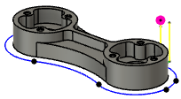

<div id="simulation_show_toolpath_points"><p>各切削位置の終点に点を表示することができます。複数の小さなセグメントを含むツールパスの解析に役立ちます。</p>
<table class="tipTable" cellspacing="10">
<tr>
<td><center></center></td>
</tr><tr>
<td><center><p><b>無効 - 点なし</b></p></center></td>
</tr></table>
<br>
<table class="tipTable" cellspacing="10">
<tr>
<td><center></center></td>
</tr><tr>
<td><center><p><b>有効 - 点を表示</b></p></center></td>
</tr></table>
</div>